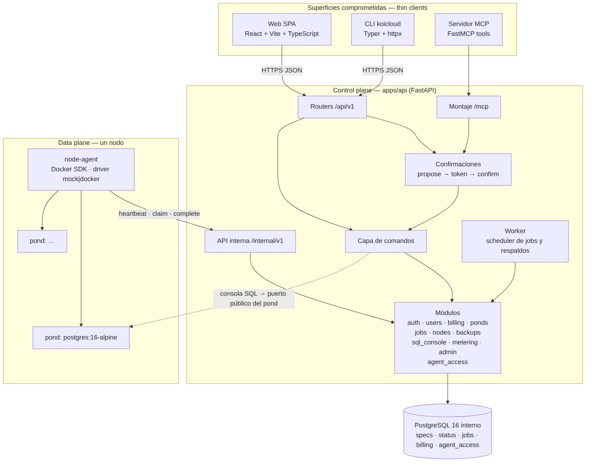
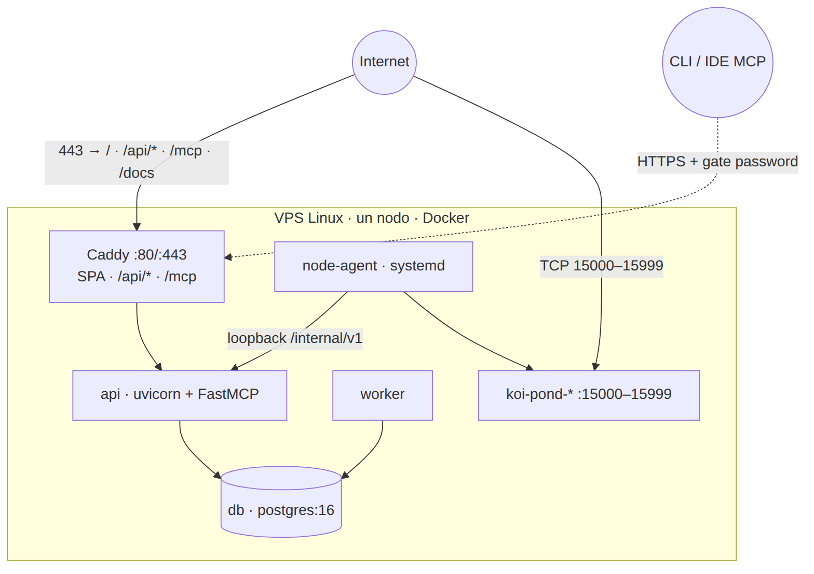
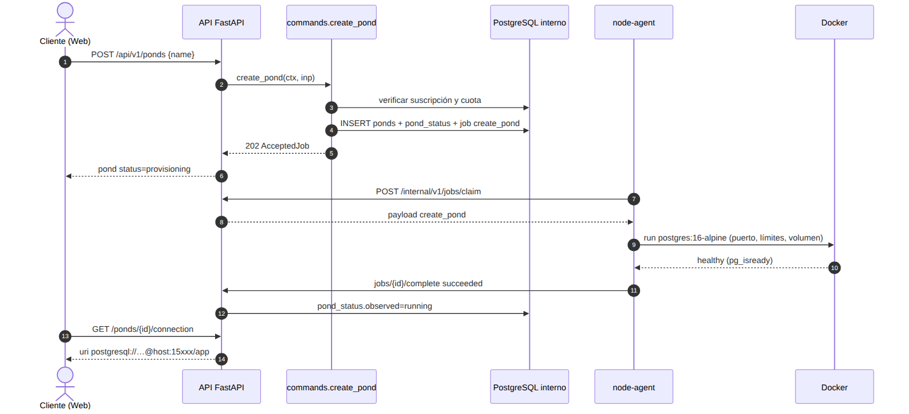
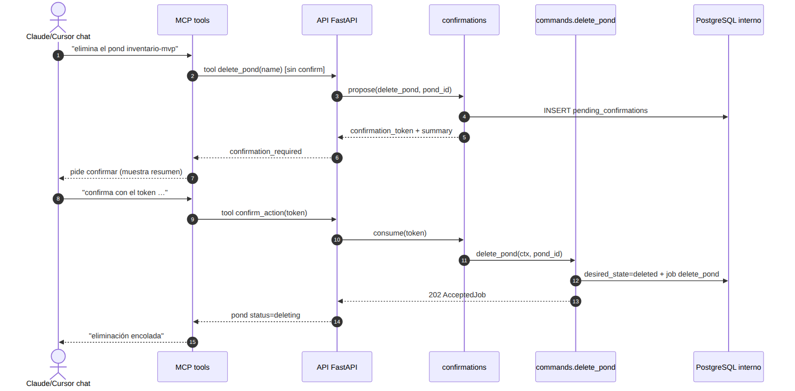
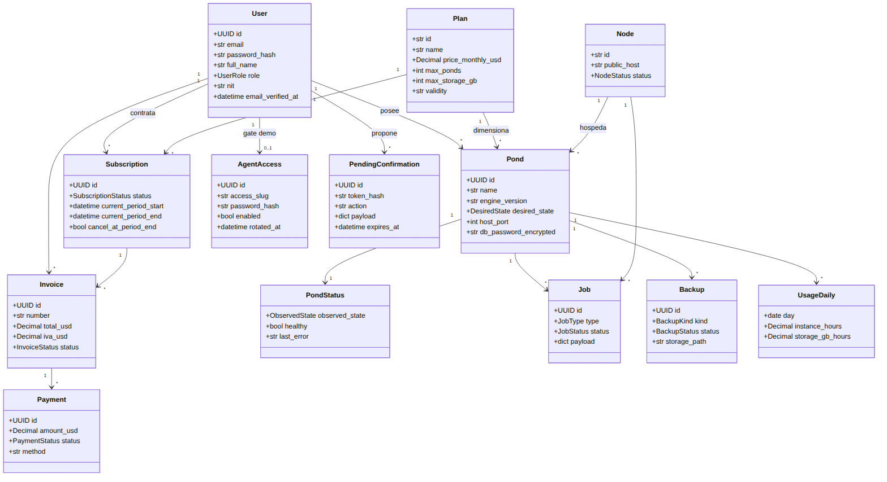
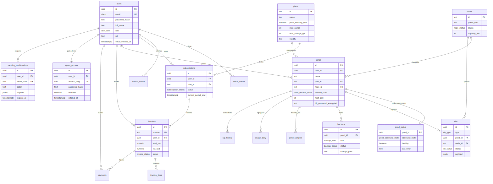

Curso: Ingeniería de Software I · Universidad Rafael Landívar · 2026
Categoría: Base de Datos como Servicio (DBaaS)
Fecha del hito: 11 de septiembre de 2026
Equipo KoiCloud: Hugo Escobar, Jason Gutiérrez, Jousé Menendez, Diego Joachin
Documento: requisitos + diseño alineados al alcance sellado
KoiCloud es una plataforma DBaaS que permite a un desarrollador registrarse, contratar un plan con pago simulado y obtener una instancia PostgreSQL gestionada (un pond) sin operar el servidor. Las superficies comprometidas son Web, CLI y MCP, todas como clientes delgados de la misma API de control plane.
Este documento responde al hito de requisitos y diseño preliminar del enunciado del curso: alcance, requisitos, casos de uso, arquitectura, diagramas UML, modelo entidad-relación y mockups con campos de salida.
| Observación | Decisión en este documento |
|---|---|
| Duda sobre auto-curación | Queda fuera de alcance como garantía de producto / demo de caos. |
| Duda sobre acceso por agentes / web+CLI+MCP | Se incluyen Web + CLI + MCP como adaptadores delgados sobre la misma API (no plataforma agéntica). Mutaciones CLI/MCP con doble confirmación. Auth de agente = gate mínima de aula; seguridad completa = V2. |
| Catálogo y features aprobados | Se mantienen planes Sandbox/Micro/Pro y el flujo DBaaS (crear, estado, conexión). |
| No dividir núcleo / deseable / ambicioso | Una sola lista de compromiso + sección explícita Fuera de alcance. |
| Hipótesis de precio / pago local | Declaradas como hipótesis; no son objetivos verificables sin usuarios reales. |
| Arquitectura acorde al conocimiento del equipo | Stack conocido: FastAPI, React, Docker, PostgreSQL; un nodo; sin brokers ni orquestadores. |
El detalle normativo del alcance está en alcance.md.
1. Auth completa (registro, verificación, recuperación, JWT+refresh) con roles Cliente y Administrador.
2. Catálogo de planes, contratación con pago simulado, historial, renovación y cancelación.
3. Provisioning real de PostgreSQL 16 en Docker; consultar estado; entregar cadena de conexión; eliminar.
4. Consola SQL en el navegador (lectura por defecto).
5. Respaldos diarios y restauración bajo demanda.
6. Vista simple de uso (horas y almacenamiento).
7. Panel de administración de usuarios, suscripciones e instancias.
8. Arquitectura control plane / node-agent / cola en PostgreSQL, un solo VPS.
9. Web + CLI + MCP como fachadas delgadas sobre la misma API.
10. Doble confirmación (propose → confirm con token) en acciones mutantes/destructivas desde CLI y MCP.
11. Auth mínima de agente: URL + password / secreto compartido (demo de aula).
12. Demo MCP fiable: guion happy-path + fallback si el LLM en vivo falla.
IaC declarativa (cloud.yaml/apply), seguridad completa de agentes (V2: OAuth, scopes, spend caps, auditoría, 2FA), auto-curación como producto, validación empírica de precio/NIT, otros motores, branching/réplicas/pooler, organizaciones, cobro real, HA/multi-nodo, roles Soporte/Operador, status page, sandbox público sin registro.
| ID | Problema | Verificación |
|---|---|---|
| P1 | Crear Postgres gestionado sin ops | URI utilizable tras crear pond |
| P2 | Estado del servicio opaco | Panel / CLI / MCP muestran status |
| P3 | Suscripción/pago académico | Flujo simulado + historial |
| P4 | Consultar sin cliente SQL | Consola web / tool MCP devuelve filas |
| P5 | Mutación segura desde agente/CLI | Propose → confirm token → efecto |
| ID | Requisito |
|---|---|
| RF-01 | Registro con correo y contraseña |
| RF-02 | Verificación de correo por enlace de un solo uso (24 h) |
| RF-03 | Recuperación de contraseña por token temporal |
| RF-04 | Autenticación con JWT de acceso + refresh token |
| RF-05 | Roles Cliente y Administrador con permisos distintos |
| RF-06 | Edición de perfil (nombre, NIT opcional) |
| ID | Requisito |
|---|---|
| RF-07 | Catálogo público de planes con nombre, descripción, precio y vigencia |
| RF-08 | Contratación con pago simulado |
| RF-09 | Historial de pagos y descarga de factura PDF (IVA desglosado) |
| RF-10 | Renovación automática al cierre de período y cancelación por el usuario |
| ID | Requisito |
|---|---|
| RF-11 | Crear pond PostgreSQL 16 indicando nombre (plan heredado de la suscripción) |
| RF-12 | Consultar estado derivado (provisioning, running, stopped, failed, …) |
| RF-13 | Obtener host, puerto, usuario, contraseña y URI |
| RF-14 | Eliminar pond con confirmación del nombre (web) / doble confirmación (CLI/MCP) |
| RF-15 | Respaldos diarios y restauración bajo demanda |
| RF-16 | Ejecutar SQL desde el navegador (read por defecto; write opcional) |
| RF-17 | Ver uso del mes: horas de instancia y almacenamiento |
| ID | Requisito |
|---|---|
| RF-18 | Administrador lista usuarios, suscripciones y ponds |
| RF-19 | Administrador puede suspender un usuario |
| ID | Requisito |
|---|---|
| RF-20 | CLI koicloud: login, list/create/get/delete ponds, connection, SQL read; llama solo a /api/v1 |
| RF-21 | Servidor MCP: tools equivalentes (list/create/delete ponds, SQL, …) delegando a la capa de comandos |
| RF-22 | Mutaciones CLI/MCP: primer paso devuelve confirmation_token; segundo paso lo consume y ejecuta |
| RF-23 | Gate de acceso agente: URL + password/secreto compartido revelable en el panel web |
| RF-24 | Guion de demo MCP documentado + modo fallback sin LLM en vivo |
| ID | Requisito | Verificación |
|---|---|---|
| RNF-01 | API p95 < 500 ms con 20 usuarios concurrentes en el VPS de demo | k6 o equivalente |
| RNF-02 | Provisioning p95 < 90 s hasta URI utilizable | Instrumentación en control plane |
| RNF-03 | Contraseñas de usuario con argon2; secretos de pond cifrados en reposo | Revisión de código |
| RNF-04 | Cada pond con límites de CPU/memoria (cgroups) | docker inspect |
| RNF-05 | UI usable desde 360 px; Chrome y Firefox actuales | Prueba manual |
| RNF-06 | OpenAPI autogenerado en /docs | Navegación |
| RNF-07 | CLI y MCP no duplican reglas de negocio (solo transportan) | Revisión: llaman commands/API |
| RNF-08 | Demo MCP reproducible vía guion/fallback en ≤ 10 min de preparación | Ensayo previo a exposición |
No se declara RNF de auto-curación ni de seguridad de agentes de nivel producción.
Actores: Visitante, Cliente, Administrador, Agente MCP (cliente técnico autenticado con gate mínima), Usuario CLI (mismo Cliente vía token).
Diagrama fuente: diagramas/03-casos-de-uso.mmd · render: renders/03-casos-de-uso.svg
1. Cliente autenticado con suscripción activa elige “Crear pond” (web) o equivalente CLI/MCP.
2. Ingresa nombre; el sistema valida cuota del plan.
3. Control plane escribe estado deseado running y encola job create_pond.
4. Node-agent reclama el job, crea el contenedor y reporta running.
5. Cliente consulta conexión y recibe URI.
Excepciones: sin suscripción → plan_required; cuota llena → quota_exceeded; sin nodo → node_unavailable.
1. Agente MCP propone delete_pond (o create / SQL write).
2. API responde confirmation_required + confirmation_token + resumen de la acción.
3. Agente (o usuario en el chat) confirma enviando el token.
4. Solo entonces se ejecuta el comando y se encola el job si aplica.
Monolito modular FastAPI (control plane) que nunca ejecuta Docker. Un node-agent en el VPS reclama trabajos, opera contenedores y reporta estado. El estado vive en PostgreSQL (deseado, observado, cola). Web, CLI y MCP son fachadas: HTTP JSON / tools MCP → misma capa de comandos.
Por qué no microservicios: un ciclo de despliegue unificado y transacciones compartidas entre auth/billing/ponds.
Por qué no Kubernetes: el curso evalúa entender el provisioning; K8s lo ocultaría y añadiría operación que no aporta al aprendizaje del hito.
Por qué cola en PostgreSQL: evita un broker extra; FOR UPDATE SKIP LOCKED basta para decenas de jobs/minuto.
Por qué CLI/MCP thin: una sola fuente de verdad de reglas; el “wow” de NL no requiere duplicar dominio.
Fuente: diagramas/01-arquitectura-componentes.mmd

Fuente: diagramas/02-despliegue.mmd

Un dominio, Caddy como proxy (/, /api/*, /mcp), API/worker/db en Compose, node-agent con acceso al socket Docker, ponds en puertos 15000–15999.
Fuente: diagramas/04-secuencia-provisioning.mmd

Fuente: diagramas/07-secuencia-mcp-confirm.mmd

Fuente: diagramas/05-clases-dominio.mmd

Incluye AgentAccess mínimo (gate de demo). Sin OAuth, scopes ni sistema de auditoría.
Fuente: diagramas/06-modelo-er.mmd

| Área | Tablas |
|---|---|
| Cuentas | users, email_tokens, refresh_tokens |
| Dinero | plans, subscriptions, payments, invoices, invoice_lines |
| Plataforma | nodes, ponds, pond_status, jobs, backups |
| Medición / SQL | pond_samples, usage_daily, sql_history |
| Agente (mínimo) | agent_access (password/hash de gate + URL slug; opcional pending_confirmations) |
Separación clave: ponds = estado deseado; pond_status = estado observado. Los jobs se procesan con SKIP LOCKED.
Planes semilla: sandbox (USD 0, vigencia 10 min), micro (USD 5/mes), pro (post-pago por hora).
| Capa | Tecnología | |
|---|---|---|
| Frontend | React + Vite + TypeScript | |
| CLI | Typer + httpx (thin client) | |
| MCP | FastMCP montado en el proceso API | |
| Backend | Python 3.12 + FastAPI + SQLAlchemy + Alembic | |
| BD interna | PostgreSQL 16 | |
| Data plane | Python + Docker SDK (modo docker \ | mock) |
| Motor ofrecido | postgres:16-alpine | |
| Auth usuario | JWT + refresh; argon2 | |
| Auth agente | Password / shared secret (gate) | |
| Proxy | Caddy | |
| CI | GitHub Actions (cuando el repo esté activo) |
Mockups HTML editables (pantallas + campos de salida):
mockups/pantallas-principales.html
| Pantalla | Salida destacada |
|---|---|
| Registro | user.id, email_verified=false, aviso de enlace |
| Planes / contratar | subscription, payment, invoice.number |
| Dashboard | lista PondOut.status, host:puerto |
| Crear pond | 202 + job_id + status=provisioning |
| Detalle | PondConnectionOut (host, port, uri, …) |
| Consola SQL | columns, rows, row_count, duration_ms |
| Uso | instance_hours, storage_gb_month |
| Admin | AdminUserOut |
| Acceso agente | URL MCP + password revelable |
| Confirmación mutación | confirmation_token, resumen, segundo paso |
Capturas PNG de referencia (si se generaron): carpeta renders/mockups/.
| Artefacto | Compromiso que cubre |
|---|---|
| Arquitectura / despliegue | Ítems 8–9 |
| Casos de uso | Ítems 1–12 |
| Secuencia provisioning | Ítem 3 |
| Secuencia MCP confirm | Ítems 10–11 |
| Clases + ER | Persistencia de 1–11 |
| Mockups | UX de 1–11 + gate/confirm |
1. Control plane ≠ Docker — el request HTTP no bloquea creando contenedores.
2. Cola en PostgreSQL — una dependencia menos que Kafka/RabbitMQ.
3. Un solo nodo — suficiente para el semestre; multi-nodo explícitamente fuera.
4. Driver mock del agente — desarrollo y demo de respaldo sin VPS.
5. Tres fachadas, una API — Web/CLI/MCP sin duplicar reglas; doble confirmación en mutaciones remotas.
6. Auth de agente mínima — demo de aula; seguridad completa aplazada a V2.
cd docs/entrega-2 npx -y @mermaid-js/mermaid-cli@11 -i diagramas/01-arquitectura-componentes.mmd -o renders/01-arquitectura-componentes.svg # repetir para 02…07; también -e png
docs/entrega-2/ README.md alcance.md ENTREGA-2.md ← este documento diagramas/*.mmd mockups/pantallas-principales.html renders/*.svg|*.png
{kind=link}